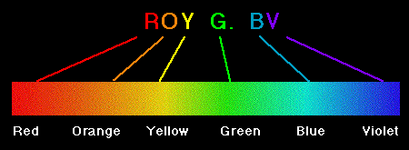

| data |
| home page |
| . About temperature - a nice, easy and informative site. Temperature and Heat - an introductive site with a historic emphasis. Temperature and Heat and Thermometers- good introductive texts from Tennessi Univ. Temperature and Heat and Regulating heat flow - readable texts from Tennessi Univ. |
|  | High Temperature Heat Pipes High Temperature Heat Pipes Isothermal Furnace Liners Pressure Controlled Heat Pipe Precision Furnaces Process . . Thermacore High Temperature Heat Pipes Isothermal Furnace Liners Pressure Controlled Heat Pipe Precision Furnaces Process Navigate www. com Choose a category About Thermacore Industry Solutions Products Newsroom Heat Pipe Tech. Papers Technology Center Design Center Search Catalogs Contact a Rep Email Us Site Map Other Thermacore Locations Choose a Location N. |